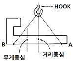
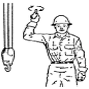

천장크레인운전기능사 (2005-01-30 기출문제)
1과목: 임의 구분
1. 천장크레인에서 집전장치라 함은 외부로부터 전력을 크레인 내에 도입하는 장치를 말한다. 아래 집전장치 중 틀린 것은?
- 폴형 집전장치
- 팬터 그래프형 집전장치
- 슈형 집전장치
- 크랭크형 집전장치
(정답률: 50%)

2. 다음 중 틀린 것은?
- 새들에는 주행차륜을 설치한다.
- 새들 양끝에는 주행 완충용 스톱퍼를 설치한다.
- 새들 좌우 외측 차륜의 중심간 거리를 휠 베이스라 한다.
- 일반적으로 거더 위에 새들을 얹어 체결한다.
(정답률: 40%)
3. 천장크레인 중 권하속도가 빠를수록 좋은 기중기는?
- 원료장입 크레인
- 강괴 크레인
- 타이어 크레인
- 담금질크레인
(정답률: 82%)
4. 두 동작을 한 개의 핸들로서 동시에 조작하는 제어기(controller)는?
- 크랭크식
- 레버식
- 유니버셜식
- 전기식
(정답률: 90%)
5. 동력의 단위 중 1마력(PS)은?
- 70kg-m
- 102kg-s/m
- 102kg-m/s
- 75kg-m/s
(정답률: 89%)
6. 입력 전압이 440V, 60(Hz)인 3상 유도전동기가 있다. 극수가 4극이고 Slip이 3% 일 때 회전자 속도는 약 얼마 인가?
- 1750rpm
- 1780rpm
- 1800rpm
- 1880rpm
(정답률: 32%)
7. 크레인의 권상장치에 있어서 드럼의 권과방지 장치를 서술한 것 중 옳지 않은 것은?
- 권과방지 장치는 스크류식, 캠식, 중추식이 주로 사용된다.
- 중추식은 훅(hook)의 접촉에 의거 작동되어 진다.
- 캠식은 활차의 회전에 의거 작동된다.
- 스크류식은 드럼의 회전에 의거 작동된다.
(정답률: 43%)
8. 권상장치의 과권방지 기구는?
- 캠식 리밋 스위치
- 원심 분리 스위치
- 족답 스위치
- 와류 브레이크
(정답률: 60%)
9. 다음 설명 중 틀린 것은?
- 거더의 캠버는 크랩을 얹은 무부하에서 스팬의 1/800을 초과하지 않아야 한다.
- 거더의 아래로 처짐은 부하에서 스팬의 1/800을 초과하지 않는 것이 좋다.
- 거더의 캠버는 보통 스팬의 1/1000∼1/1200 정도가 양호하다.
- 스팬이 30m 미만인 것은 캠버를 달지 않아도 된다.
(정답률: 48%)
10. 전달할 수 있는 토크의 크기가 큰 것부터 순서대로 된 것은?
- 성크키이 - 스플라인 - 새들키이 - 평키이
- 평키이 - 새들키이 - 성크키이 - 스플라인
- 새들키이 - 성크키이 - 스플라인 - 평키이
- 스플라인 - 성크키이 - 평키이 - 새들키이
(정답률: 67%)
11. 천장크레인에서 가장 많이 사용하는 전압(V)은?
- 120
- 110
- 700
- 440
(정답률: 86%)
12. 절연등급이 B종인 모터의 최고 사용온도는?
- 95°
- 120°
- 130°
- 155°
(정답률: 73%)
13. 전동기를 접지하는 목적으로 맞는 것은?
- 감전을 방지하기 위해
- 전동기의 과열을 방지하기 위해
- 누전을 방지하기 위해
- 전동기에 전기를 공급하기 위해
(정답률: 64%)
14. 전자 브레이크의 전자석이 소리를 내며 과열, 소손되는 원인 중 관계가 없는 것은?
- 브레이크 라이닝이 발열하지 않았는가
- 풀리와 라이닝의 틈새가 너무 적지 않은가
- 스트로크가 너무 크지 않은가
- 각 링크의 핀류가 부식 또는 도장으로 굳어 있지 않는가
(정답률: 8%)
15. 다음에서 윤활유나 그리스 등이 묻어서는 안 되는 곳은?
- 와이어로프 및 드럼
- 베어링 및 하우징
- 체인 및 스프로켓트
- 브레이크 드럼
(정답률: 64%)
16. 다음 중 전자 접촉기의 개폐 동작 불량의 원인으로 옳지 않은 것은?
- 전압 강하가 크다.
- 접점의 마모가 크다.
- 전동기의 속도가 너무 빠르다.
- 조작회로가 고장이다.
(정답률: 75%)
17. 주행레일에서 스팬 25m 미만의 허용 오차는?
- ±10㎜
- ±12㎜
- ±15㎜
- ±18㎜
(정답률: 58%)
18. 거더와 새들을 점검하는 방법이 아닌 것은?
- 부재의 균열 유무 확인
- 구조물의 용접부에 균열 또는 결함의 발생 유무 확인
- 취부 볼트의 풀림, 부식 등은 없는지 확인
- 윤활유는 적당한가 확인
(정답률: 65%)
19. 브레이크 휠과 라이닝의 수직, 수평 폭은 몇 ㎜이내로 해야 하는가?
- 1
- 1.5
- 2
- 2.5
(정답률: 17%)
20. 전자접촉기에서 가장 큰 잡음이 나는 원인은?
- 접점에 녹이 슬었을 경우
- 코일에 이상이 있을 경우
- 주파수가 맞지 않을 경우
- 전자접촉기의 부착이 반듯하지 못할 경우
(정답률: 50%)
2과목: 임의 구분
21. 천장크레인의 감속기에서 오일브리더(oil breather)란?
- 감속기의 오일량을 측정하는 눈금 표시이다.
- 감속기의 오일상태를 점검하기 위한 오일 토출구이다
- 감속기의 오일이 더워지면 습기(수증기)가 빠져 나가는 장치이다.
- 감속기내의 오일압력을 조절해 주는 장치이다.
(정답률: 36%)
22. 베어링 조립시 통상 어떤 방법으로 하는가?
- 망치로 베어링 양측을 번갈아 두드려 넣는다.
- 베어링 외측을 고무망치로 두드려 넣는다.
- 베어링 내륜에 면이 바른 아답타를 대고 두드려 넣는다.
- 나무망치로 두드려 넣는다.
(정답률: 53%)
23. 균열로 인한 용접보수시 유의사항으로 가장 중요한 것은?
- 도장이 타버리는 관계
- 용접의 인장 관계
- 용접으로 인한 변형 관계
- 화재발생 위험도
(정답률: 48%)
24. 다음 기어에 있어서 치차의 마모, 치차의 절손이나 큰 사고를 일으킬 위험이 있을 경우 고속 1단 기어는 몇 % 마모시 교환해야 하는가?
- 40~50
- 30~40
- 20~30
- 10~20
(정답률: 25%)
25. 기어의 손상 중 잇면으로부터 일부 금속편이 떨어지는 경우 그 원인으로 가장 적당한 것은?
- 과하중 또는 중심선의 불일치
- 윤활유의 부적당
- 윤활유 속의 이물질
- 기어의 회전속도가 느릴 때
(정답률: 71%)
26. 주기적인 정비를 위한 예비품목 중 가장 거리가 먼 것은?
- 모터 브러시
- 제어반(판넬)
- 콜렉타 브러시
- 제어기 접점
(정답률: 49%)
27. 볼베어링에서 볼을 적당한 간격으로 유지시키는 것은?
- 부시(bush)
- 레이스(race)
- 하우징(housing)
- 리테이너(retainer)
(정답률: 50%)
28. 운전종료 후의 조치사항으로서 틀린 것은?
- 각 제어기를 OFF하고 전원스위치(S/W)를 OFF한다.
- 각 부의 기기를 청소한다.
- 운전종료 지점에 기중기를 정지시키고 각 스위치(S/W)를 OFF한다.
- 운전 중 조금이라도 이상을 느꼈던 부분을 점검한다.
(정답률: 67%)
29. 와이어로프의 지름이 36㎜일 때 클립의 최소 수는 몇 개인가?
- 3
- 4
- 5
- 6
(정답률: 35%)
30. 다음 설명 중 틀린 것은?
- 가벼운 짐이라도 외줄로 매달아서는 안 된다.
- 구멍이 없는 둥근 것을 매달 때는 로프를 +자 무늬로 한다.
- 두 대의 기중기로 작업을 할 때 지휘자는 절대 한 사람이어야 하며 신호수는 기중기 한대에 1명씩 필요하다.
- 운전자는 줄걸이 상태가 좋지 않다고 생각될 때 그 작업을 하지 않아야 한다.
(정답률: 69%)
31. 그림과 같이 물건을 들어 올리려고 했을 때 권상을 한 후에는 어떤 현상이 일어나는가?

- 수평상태가 유지된다.
- A쪽이 밑으로 기울어진다.
- B쪽이 밑으로 기울어진다.
- 무게중심과 훅 중심이 수직으로 만난다.
(정답률: 92%)
32. 와이어로프의 열 영향에 의한 재질 변형의 한계는?
- 50℃
- 100℃
- 200~300℃
- 300~400℃
(정답률: 73%)
33. 와이어로프의 ＋ 킹크에 대한 설명이 맞는 것은?
- Z 꼬임 와이어를 Z 방향으로 비틀림한 경우
- Z 꼬임 와이어를 S 방향으로 비틀림한 경우
- S 꼬임 와이어를 Z 방향으로 비틀림한 경우
- Y 꼬임 와이어를 Z 방향으로 비틀림한 경우
(정답률: 45%)
34. 와이어로프 랭그꼬임에 대한 설명 중 틀린 것은?
- 보통 꼬임보다 손상도가 적다.
- 보통 꼬임에 비하여 킹크를 잘 일으키지 않는다.
- 로프의 꼬임방향과 스트랜드의 꼬임방향이 같다.
- 보통 꼬임보다 사용 수명이 길다.
(정답률: 53%)
35. 중량을 계산할 때 일반 철판류의 비중은?
- 약 5
- 약 6
- 약 8
- 약 10
(정답률: 28%)
36. 천장크레인 호칭이 KSB 6228 저속형 20/5t ×10m일 때 호칭의 숫자기호와 와이어로프 선정과의 관계 중 가장 맞는 것은?
- 20호 또는 5호의 로프의 사용을 규정한 것이다.
- 20톤의 하중에서 10m길이 이내의 로프를 사용하라는 표지이다.
- 20 또는 5톤의 하중에서 10m 길이이내의 로프를 사용하라는 표지이다.
- 문제의 호칭기호는 로프의 사용 또는 선정을 규정한 것이 아니다.
(정답률: 14%)
37. 천장크레인용 와이어로프에 대한 설명 중 틀린 것은?
- 와이어로프의 구조는 스트랜드와 심강으로 구분한다.
- 와이어로프를 클립(clip) 고정시 로프의 직경이 30㎜일 때 클립수는 최소 4개는 되어야 한다.
- 와이어로프의 심강으로는 섬유심이 가장 많다.
- 와이어로프의 심강으로 철심을 사용할 수 있다.
(정답률: 48%)
38. 와이어로프 손상의 주된 원인은?
- 마모, 부식
- 표면의 도유
- 로프의 보관장소의 통풍
- 로프표면에 부착된 수분을 제거를 위한 마른걸레질
(정답률: 75%)
39. 트로리 와이어에 감전재해 방지를 위해 통전중임을 알리는 적색의 표시등을 설치하여야 한다. 이 때 통전 표시등 설치장소로 가장 부적합한 곳은?
- 전동기 말단부
- 구간 스위치의 양쪽
- 트로리 와이어의 말단부
- 트로리 와이어에 전원이 인입되는 곳
(정답률: 28%)
40. 크레인의 일반적인 기동법은?
- 2차 저항 기동법
- △Y 기동법
- 리액터 기동법
- 소프터 스타터 기동법
(정답률: 60%)
3과목: 임의 구분
41. 그림의 "한쪽 팔 팔꿈치에 다른 손 손바닥을 떼었다. 붙였다." 하는 신호내용은?
- 마그넷붙이기
- 천천히 조금씩 아래로 내리기
- 보권사용
- 위로올리기
(정답률: 40%)
42. 천장크레인의 운동속도에 대한 설명 중 틀린 것은?
- 권상장치에서의 속도는 양정이 짧은 것은 빠르게, 긴 것은 느리게 작동되게 한다.
- 권상장치에서의 속도는 하중이 가벼우면 빠르게, 무거우면 느리게 작동되게 한다.
- 위험물을 운반시는 가능한 저속으로 운전함이 좋다.
- 주행속도는 가능한 저속으로 운전하는 것이 좋다.
(정답률: 56%)
43. 와이어로프로 줄걸이 작업 후 화물을 달아 올릴 때 고려할 사항이 아닌 것은?
- 가능한 빠른 속도로 감아올린다.
- 로프의 팽팽한 정도를 확인한다.
- 진동이나 요동이 없도록 한다.
- 수직으로 매달아 로프 등에 평균적 힘이 걸리게 한다.
(정답률: 78%)
44. 체인을 사용할 때 주의 사항으로 틀린 것은?
- 비틀린 상태에서는 사용하지 말 것
- 높은 곳에서 떨어뜨리지 말 것
- 화물의 밑에 깔려있는 체인은 강제로 뽑아낼 것
- 영하의 온도에서 사용할 때는 충격이 가해지지 않도록 할 것
(정답률: 82%)
45. 감전에 대한 설명으로 가장 거리가 먼 것은?
- 감전의 피해정도는 전류의 크기와 통전시간에 따라 다르다.
- 감전사고는 여름에 적다.
- 50mA 이상의 전류가 인체에 흐르면 상당히 위험하다.
- 건조한 옷, 고무장갑 등을 착용하면 좋다.
(정답률: 67%)
46. 천장크레인으로 물건을 운반할 때 주의할 점이다. 이중 잘못 설명된 것은?
- 적재물이 떨어지지 않도록 한다.
- 부하물 위에 사람을 태워서는 안 된다.
- 경우에 따라서는 과부하 하중 이상의 무게를 매달을 수 있다.
- 줄걸이 와이어로프의 안전 여부를 항상 확인한다.
(정답률: 95%)
47. 그림의 수신호는 작업자가 천정기중기 운전자에게 보내는 신호이다. 어떻게 운전하라는 것인가?

- 훅을 돌린다.
- 훅을 올린다.
- 훅을 내린다.
- 훅을 정지시킨다.
(정답률: 79%)
48. 제어기 설명 중 잘못된 것은?
- 회로의 단속에는 접촉편 및 접촉자를 사용한다.
- 전동기 40㎾ 이상은 직접 제어기를 사용해야 한다.
- 1차측의 전원회로를 변환한다.
- 2차측의 저항은 차례로 단속하여 속도제어 한다.
(정답률: 48%)
49. 옥외에 설치되어있는 주행 크레인은 순간풍속이 얼마가 되면 이탈방지장치를 작동시켜야 하는가?
- 30m/s
- 20m/s
- 15m/s
- 10m/s
(정답률: 58%)
50. 운전자가 기중기 탑승시 간단한 조작 점검을 한 예이다. 틀린 것은?
- 주행레일 상의 위험물 여부를 확인 후 약 20∼30 m 주행하여 본다.
- 권상용 제어기를 작동(ON, OFF)시켜 브레이크의 지지 능력을 점검한다.
- 횡행장치를 구동시켜 본다.
- 비상용 권상 중추식 리밋 스위치의 작동상태를 점검하기 위해 최대한 권상시켜 본다.
(정답률: 80%)
51. 연삭기 사용 작업시 반드시 착용해야 하는 보호구는?
- 방독면
- 안전장갑
- 보안경
- 귀마개
(정답률: 67%)
52. 기계장치 노후 및 열화는 어느 곳에서 가장 심하게 나타나는가?
- 방호장치 부분
- 운전장치 부분
- 조작장치 부분
- 부속장치 부분
(정답률: 19%)
53. 복스렌치 사용에 대한 설명으로 틀린 것은?
- 소켓렌치보다 더 큰 힘으로 조일 때 사용한다.
- 여러 방향에서 사용이 가능하다.
- 오픈렌치와 규격이 동일하다.
- 사용 중 잘 미끄러지지 않는다.
(정답률: 35%)
54. 위험기계기구에 설치하는 방호장치가 아닌 것은?
- 급정지장치
- 자동전격방지장치
- 역화방지장치
- 하중측정장치
(정답률: 62%)
55. 안전사고와 부상의 종류에서 중상해란 어느 정도의 상해를 말하는가?
- 부상으로 1주 이상의 노동 손실을 가져온 상해정도
- 부상으로 2주 이상의 노동 손실을 가져온 상해정도
- 부상으로 3주 이상의 노동 손실을 가져온 상해정도
- 부상으로 4주 이상의 노동 손실을 가져온 상해정도
(정답률: 54%)
56. 다음 중 장비의 폐기물 처리에 대하여 틀린 것은?
- 폐유는 지면에 직접 배유하여 흙으로 덮어야 한다.
- 하수도, 하천 등에 폐유를 버리지 않는다.
- 장비에서 오일을 빼낼 때는 오일 용기에 받는다.
- 오일, 배터리 등의 유해물처리는 관련 법규를 준수한다.
(정답률: 80%)
57. 감전되거나 전기화상을 입을 위험이 있는 작업시 작업자가 착용해야 할 것은?
- 구명구
- 보호구
- 구명조끼
- 비상벨
(정답률: 77%)
58. 일반적인 작업장에서 위험을 방지하기 위한 준비사항으로 가장 거리가 먼 것은?
- 작업복의 착용
- 안전모의 착용
- 안전화의 착용
- 가죽장갑의 착용
(정답률: 86%)
59. 공장 내 안전수칙으로 적합한 것은?
- 기름걸레나 인화물질을 철재상자에 보관 한다.
- 정비작업시 차를 받칠 때는 잭이나 호이스트(hoist)만 사용한다.
- 공구나 부속품을 닦는데는 휘발유를 사용한다.
- 차가 잭에 의해 올려져 있을 때는 정비기술자만이 차내에 들어갈 수 있다.
(정답률: 57%)
60. 다음 작업 중 보호안경을 사용하지 않아도 되는 작업은?
- 용접 작업
- 연마 작업
- 먼지세척 작업
- 장비운전 작업
(정답률: 85%)
크랭크형 집전장치는 손잡이를 돌려서 발전기를 구동시켜 전기를 생산하는 방식으로, 간단하고 경제적인 방법입니다. 반면에 폴형 집전장치는 크레인의 전신에 직접 부착되어 있으며, 전기를 공급하는 역할을 합니다. 슈형 집전장치는 크레인의 전신과 연결된 케이블을 통해 전기를 공급하며, 팬터 그래프형 집전장치는 크레인의 전신과 연결된 케이블을 통해 전기를 공급하면서도 발전기를 회전시켜 전기를 생산하는 방식입니다.